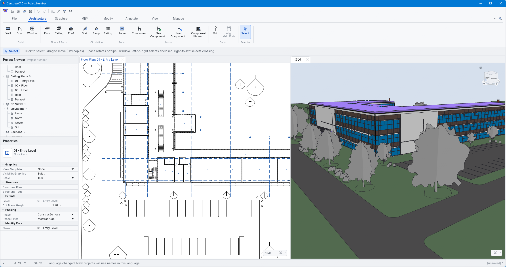
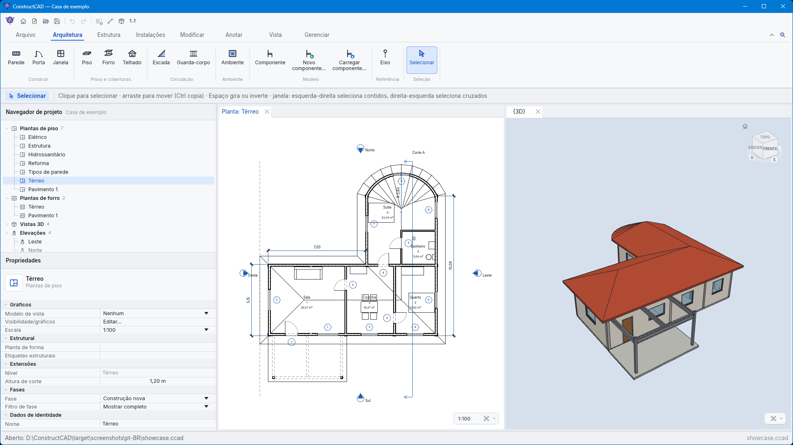

Open source BIM, built in Rust BIM livre e de código aberto, feito em Rust
One parametric model is the source of truth. Plans, sections, elevations, 3D views, schedules and sheets are queries over it and update after every change. Um único modelo paramétrico é a fonte da verdade. Plantas, cortes, elevações, vistas 3D, tabelas e folhas são consultas sobre ele e se atualizam a cada alteração.


Familiar by designFamiliar por design
The menus, shortcuts, panels and tools your hands already know. Productive on day one, no retraining. Os menus, atalhos, painéis e ferramentas que suas mãos já conhecem. Produtivo desde o primeiro dia, sem reaprender.
A quick access toolbar at the top left, a ribbon of tabs, properties and project browser docked at the side, standard and two-letter keyboard shortcuts. Every tooltip shows the shortcut, what the button does, why it is unavailable, and the engine command behind it. Ctrl+Shift+P opens a command palette that finds any command or view by name. Barra de acesso rápido no canto superior esquerdo, ribbon com abas, propriedades e navegador de projeto na lateral, atalhos de teclado padrão e de duas letras. Cada dica mostra o atalho, o que o botão faz, por que está indisponível e o comando do motor por trás dele. Ctrl+Shift+P abre uma paleta que encontra qualquer comando ou vista pelo nome.
Available in English, Portuguese (Brazil), Spanish, French, German, Italian, Lao, Polish, Ukrainian and Traditional Chinese. Disponível em inglês, português (Brasil), espanhol, francês, alemão, italiano, laosiano, polonês, ucraniano e chinês tradicional.
What it doesO que ele faz
Architecture, structure and building services in one model, with drawings and IFC that follow it. Arquitetura, estrutura e instalações em um só modelo, com desenhos e IFC que o acompanham.
ModelingModelagem
Layered walls (straight or arc) with automatic joins, doors and windows, floors, ceilings, rooms with live area, and pitched roofs computed by a straight skeleton.Paredes em camadas (retas ou em arco) com junções automáticas, portas e janelas, pisos, forros, ambientes com área viva e telhados calculados por esqueleto reto.
StructureEstrutura
Columns, beams, steel and hollow sections, footings and rafts, reinforcement with a steel schedule, an analytical model, stairs and railings.Pilares, vigas, perfis metálicos e tubulares, sapatas e radiers, armaduras com quadro de aço, modelo analítico, escadas e guarda-corpos.
Building servicesInstalações
Pipe and conduit networks with derived fittings, sizing of drains, water pipes and circuits, panel diagrams and load schedules.Redes de tubos e eletrodutos com conexões derivadas, dimensionamento de esgoto, água e circuitos, diagramas unifilares e quadros de carga.
Views and sheetsVistas e folhas
Plans, sections and elevations with hidden lines and cut hatching, schedules with CSV export, A0–A4 sheets exported to vector PDF, SVG and PNG.Plantas, cortes e elevações com linhas ocultas e hachuras de corte, tabelas com exportação CSV, folhas A0–A4 em PDF vetorial, SVG e PNG.
Parametric componentsComponentes paramétricos
Furniture, fixtures, doors and windows made of extruded and revolved pieces whose sizes are expressions over named parameters, shared as .ccomp files.Mobiliário, louças, portas e janelas feitos de peças extrudadas e revolucionadas cujas medidas são expressões sobre parâmetros, compartilhados em arquivos .ccomp.
Open IFCIFC aberto
IFC4 export and IFC2X3/IFC4 import with an in-house STEP reader, writer and geometry engine. No class is dropped on import.Exportação IFC4 e importação IFC2X3/IFC4 com leitor, escritor STEP e motor de geometria próprios. Nenhuma classe é descartada na importação.
Phases and graphicsFases e gráficos
Renovation phases (existing, demolished, new), per-view overrides, rule-based filters, view templates and temporary hide/isolate.Fases de reforma (existente, demolir, novo), sobreposições por vista, filtros por regra, modelos de vista e ocultar/isolar temporário.
Readable filesArquivos legíveis
Projects are versioned, human-readable .ccad text files saved atomically. Undo and redo cover every edit.Projetos são arquivos de texto .ccad versionados e legíveis, salvos de forma atômica. Desfazer e refazer cobrem toda edição.
ScreenshotsImagens
The showcase house, built only with engine commands by examples/showcase.ccmacro.
A casa de demonstração, construída só com comandos do motor por examples/showcase.ccmacro.
Scriptable, and ready for AI agentsProgramável e pronto para agentes de IA
Every operation is an engine command with JSON parameters and a JSON Schema. The ccad tool runs them from the command line, from scripts, or as an MCP server for AI agents. The desktop app runs on the same commands, and macros record what you do.
Toda operação é um comando do motor com parâmetros JSON e um JSON Schema. A ferramenta ccad os executa pela linha de comando, por scripts ou como servidor MCP para agentes de IA. O aplicativo usa os mesmos comandos, e as macros gravam o que você faz.
ccad commands
ccad schema wall_create
ccad -p house.ccad --save run wall_create \
start=[0,0] end=[5,0] height=2.8
ccad -p house.ccad run elements_list category=door
ccad -p model.ifc --save-as model.ccad run project_info
# MCP clients
{ "mcpServers": { "constructcad":
{ "command": "ccad", "args": ["mcp"] } } }Download
Each release has installers, plain archives and a SHA256SUMS.txt to check them against.
Cada versão traz instaladores, arquivos compactados e um SHA256SUMS.txt para conferi-los.
| SystemSistema | PackagePacote |
|---|---|
| Windows (x64) | .msi installer with a Start menu shortcut and .ccad file association, or a .zip.Instalador .msi com atalho no menu Iniciar e associação de arquivos .ccad, ou um .zip. |
| Linux (x86_64, arm64) | .deb (Debian, Ubuntu), .AppImage or .tar.gz. Needs glibc 2.35+ and a Vulkan or OpenGL driver..deb (Debian, Ubuntu), .AppImage ou .tar.gz. Requer glibc 2.35+ e driver Vulkan ou OpenGL. |
| macOS | .dmg for Apple silicon or Intel, or a .tar.gz with the ccad tool..dmg para Apple silicon ou Intel, ou um .tar.gz com a ferramenta ccad. |
The builds are not code-signed yet: on Windows choose More info → Run anyway; on macOS open the app once and allow it in System Settings → Privacy & Security. As versões ainda não são assinadas: no Windows escolha Mais informações → Executar assim mesmo; no macOS abra o app uma vez e permita em Ajustes do Sistema → Privacidade e Segurança.